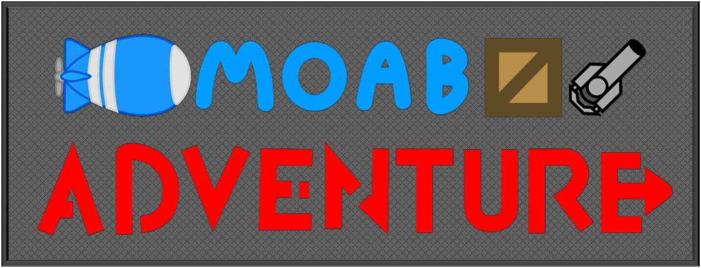

Welcome!
This wiki is designed to give up-to-date information on the online game MOAB Adventure.
MOAB Adventure is a side-scrolling aerial shooter game, written in JavaScript.
It takes the same concept as games like Rovio's Bad Piggies: What if you played as the original game's enemy?
You, as the Bloons, must maneuver a blimp through an onslaught of boxes, dodging them until you can afford a weapon. Then, it's your job to survive, shooting boxes to gain extra money with which to buy upgrades, which allow you to keep up with the ever-increasing health pools of the boxes, strategising with damage types to destroy different kinds of boxes, until eventually reaching a boss. After that, all bets are off, as you can no longer simply dodge the boss - various attacks force you to move around, evading the attacks and gunning the boss down.
This eventually allows you to progress to the next zone, where you do it all again, but with a twist: each zone has different boxes, bosses and even natural hazards to look out for, ending with an extremely powerful final boss for the zone.
A selection of difficulties, gamemodes and weapon options allow for many runs through the game, each with differing strategies.
It is available to play here: MOAB Adventure
Tools / Resources
There are multiple tools and resources available for players to simplify and enhance their experience:
- The Weapon Maker offers a way to create weapon designs out of simple blocks, and is the basis of this wiki's built-in weapon renderer.
- This wiki gives up-to-date information about game content, along with written overviews not found in-game.